UD 2 El lenguaje PHP. Básico 2
Duración Estimada: 8 sesiones, 16 horas
RA2 Escribe sentencias ejecutables por un servidor Web reconociendo y aplicando procedimientos de integración del código en lenguajes de marcas.
- A Se han reconocido los mecanismos de generación de páginas Web a partir de lenguajes de marcas con código embebido.
- B Se han identificado las principales tecnologías asociadas.
- C Se han utilizado etiquetas para la inclusión de código en el lenguaje de marcas.
- D Se ha reconocido la sintaxis del lenguaje de programación que se ha de utilizar.
- E Se han escrito sentencias simples y se han comprobado sus efectos en el documento resultante.
- F Se han utilizado directivas para modificar el comportamiento predeterminado.
- G Se han utilizado los distintos tipos de variables y operadores disponibles en el lenguaje.
- H Se han identificado los ámbitos de utilización de las variables.
RA3 Escribe bloques de sentencias embebidos en lenguajes de marcas, seleccionando y utilizando las estructuras de programación. 
- A Se han utilizado mecanismos dedecisión en la creación de bloques de sentencias.
- B Se han utilizado bucles y se ha verificado su funcionamiento.
- C Se han utilizado «arrays» para almacenar y recuperar conjuntos de datos.
- D Se han creado y utilizado funciones.
- E Se han utilizado formularios Web para interactuar con el usuario del navegador Web.
- F Se han empleado métodos para recuperar la información introducida en el formulario.
- G Se han añadido comentarios al código
OBJETIVOS SEMANALES
Instalar Entorno PHP
Crear y compartir Repositorio GitHub
Primeros programas PHP y subir al repositorio

3 Tipos de datos: funciones y variables
Estamos aprendiendo...
RA3 : Escribe bloques de sentencias embebidos en lenguajes de marcas, seleccionando y utilizando las estructuras de programación. C.Ev.D Se han creado y utilizado funciones.
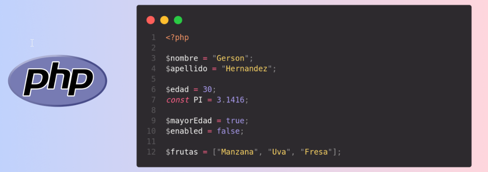
1. Isset, Unset y isnull
En PHP existen funciones específicas para comprobar y establecer el tipo de datos de una variable,
- gettype obtiene el tipo de la variable que se le pasa como parámetro y devuelve una cadena de texto, que puede ser
- array, boolean, double, integer, object, string, null, resource o unknowntype.
También podemos comprobar si la variable es de un tipo concreto utilizando una de las siguientes funciones: * > is_array(), is_bool(), is_float(), is_integer(), is_null(), is_numeric(), is_object(), is_resource(), is_scalar() e is_string().
Devuelven true si la variable es del tipo indicado.
- Análogamente, para establecer el tipo de una variable utilizamos la función settype pasándole como parámetros la variable a convertir, y una de las siguientes cadenas: boolean , integer , float , string , array , object o null .
- La función settype devuelve true si la conversión se realizó correctamente, o false en caso contrario.
- isset: Si lo único que te interesa es saber si una variable está definida y no es null , puedes usar la función isset .
- La función unset destruye la variable o variables que se le pasa como parámetro
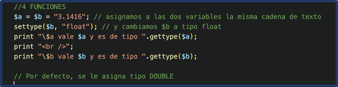
üíªPrograma6: Isset, Unset y isnull
Programa6.php: Isset, Unset y isnull (Ruta:dwes/UD2/Entrega1/Programa6_isnull.php)
En este ejercicio trabajaremos con las funciones detipos de datos en PHP .
Como verás, el programa 6:
- Declara las siguientes variables:
- Una cadena con el valor
"Hola mundo". - Un número entero con el valor
25. - Un número decimal con el valor
12.34. - Un array con los valores
avión, helicóptero, dron. - Una variable con valor
null. - Muestra el tipo de cada variable utilizando la función
gettype(). - Comprueba si las variables son de un tipo concreto utilizando al menos 5 de las siguientes funciones:
is_array(),is_bool(),is_float(),is_integer(),is_null(),is_numeric(),is_object(),is_resource(),is_scalar(),is_string().- Convierte la variable decimal en cadena usando
settype()y muestra antes y después el tipo de dato. - Comprueba si la variable entera está definida y no es
nullconisset(). - Elimina la variable entera con
unset()y demuestra que ya no existe. - Modifica un poco algunas variables y realiza tus comprobaciones.
- ¿Qué hace la última línea?
(isset($entero) ? "existe" : "no existe") - Documenta tus conclusiones
<?php
// Programa 6- Comprobación y conversión de tipos
/*
En este ejercicio trabajaremos con las funciones de **tipos de datos en PHP** .
1. Declara las siguientes variables:
* Una cadena con el valor `"Hola mundo"`.
* Un número entero con el valor `25`.
* Un número decimal con el valor `12.34`.
* Un array con los valores `avión, helicóptero, dron`.
* Una variable con valor `null`.
2. Muestra el **tipo de cada variable** utilizando la función `gettype()`.
3. Comprueba si las variables son de un tipo concreto utilizando al menos 5 de las siguientes funciones:
* `is_array()`, `is_bool()`, `is_float()`, `is_integer()`, `is_null()`, `is_numeric()`, `is_object()`, `is_resource()`, `is_scalar()`, `is_string()`.
4. Convierte la variable decimal en cadena usando `settype()` y muestra antes y después el tipo de dato.
5. Comprueba si la variable entera está definida y no es `null` con `isset()`.
6. Elimina la variable entera con `unset()` y demuestra que ya no existe.
*/
// 1. Declaración de variables
$cadena = "Hola mundo";
$entero = 25;
$decimal = 12.34;
$lista = array("avión", "helicóptero", "dron");
$nulo = null;
// 2. Mostrar tipo con gettype
echo "Tipo de cadena: " . gettype(/* ... */) . "<br>";
echo "Tipo de entero: " . gettype(/* ... */) . "<br>";
// 3. Comprobaciones con is_...
if (is_string(/* ... */)) {
echo "La variable es una cadena<br>";
}
if (is_array(/* ... */)) {
echo "La variable es un array<br>";
}
// 4. Conversión con settype
echo "Antes de convertir: " . gettype($decimal) . "<br>";
settype($decimal, /* ... */);
echo "Después de convertir: " . gettype($decimal) . "<br>";
// 5. isset
if (isset(/* ... */)) {
echo "La variable está definida y no es null<br>";
}
// 6. unset
unset(/* ... */);
echo "Después de unset: " . (isset($entero) ? "existe" : "no existe") . "<br>";
// 7 mostramos variable No definida
echo "<br>Mostramos variable no definida:$entero"; // Notice: Undefined variable: entero
?>
2. Evitar warning
Aunque a veces podemos querer que los errores y las advertencias (warning) sean mostradas en nuestro navegador, no es una buena práctica mostrarlas ante posibles vulnerabilidades del sistema.
- Para evitar el siguiente mensaje de error existen varias formas de hacerlo, tanto dentro de nuestro código como dentro del fichero de configuración php.ini
Enlace a “cómo ocultar warning en PHP”
Warning en el programa anterior:
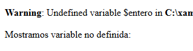
Mostrar todos los warnings y errores
<?php
// Muestra todos los errores, incluidos los warnings
error_reporting(E_ALL);
ini_set('display_errors', 1);
echo $variableInexistente; // Warning: variable no definida
?>
Ocultar Warning
<?php
// Oculta todos los warnings (aunque se sigan generando internamente)
error_reporting(0);// 7 mostramos variable No definida
echo "<br>Mostramos variable no definida:$entero"; // Notice: Undefined variable: entero
ini_set('display_errors', 0);
echo $variableInexistente; // No muestra nada en pantalla
?>
Ocultar un warning concreto
<?php
// El operador @ suprime el warning de esa instrucción concreta
$resultado = @file_get_contents("archivo_que_no_existe.txt");
if ($resultado === false) {
echo "No se pudo leer el archivo.";
}
?>
- Lo recomendable es mostrar los warnings en desarrollo para detectar errores y ocultarlos en producción (registrándolos en un log con
error_log()). ini_set()te deja modificar parámetros dephp.inidirectamente desde el código mientras el script se está ejecutando.- No todas las directivas se pueden modificar con
ini_set()(algunas sonPHP_INI_SYSTEMy solo se cambian enphp.inio en el servidor).
üíªPrograma6: amplia para ocultar el warning generado
Programa6.php: Isset, Unset y isnull (Ruta:dwes/UD2/Entrega1/Programa6_isnull.php)
Completa el Programa 6 para mostrar/ocultar los warnings y anota diferencia
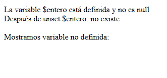
3. Constantes y constantes predefinidas
En PHP hay dos formas principales de definir una constante:
1. Con const
Se usa fuera de funciones, clases o bucles (a nivel global o dentro de clases).
<?php
const EQUIPO = "Los Tigres";
const AFORO = 50000;
echo EQUIPO; // Muestra: Los Tigres
echo AFORO; // Muestra: 50000
2. Con define()
Puede usarse en cualquier parte del código (funciones, condicionales, etc.).
<?php
define("DEPORTE", "Fútbol");
define("ESTADIO", "Gran Arena");
echo DEPORTE; // Muestra: Fútbol
echo ESTADIO; // Muestra: Gran Arena
⚠️ Diferencias rápidas:
const→ más rápido, recomendado para constantes que conoces desde el principio.define()→ más flexible, se puede usar en tiempo de ejecución.
Con la función define puedes definir constantes:
- bool define ( string $identificador , mixed $$case_insensitive = false ] );
Los identificadores no van precedidos por el signo "$" y suelen escribirse en MAYÚSCULAS, aunque existe un tercer parámetro opcional, que si vale true hace que se reconozca el identificador independientemente de si está escrito en mayúsculas o en minúsculas
TiposDatos
Sólo se permiten los siguientes tipos de valores para las constantes:integer, float , string , boolean y null .
El caso insensitivo genera error desde PHP 7.3 https://www.php.net/manual/en/function.define.php
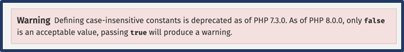

Constantes predefinidas por PHP
https://www.php.net/manual/es/language.constants.predefined.php
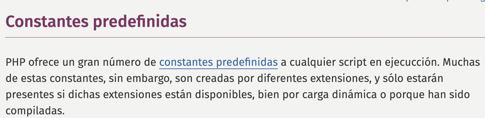
üíª Programa7: constantes
Programa7_constantes.php (Ruta:dwes/UD2/Entrega1/Programa7_constantes.php)
Lee elsiguiente artículo (enlace) y crea un scripts con diferentes bloques de php estudiando el uso de las constantes y predefinidas,
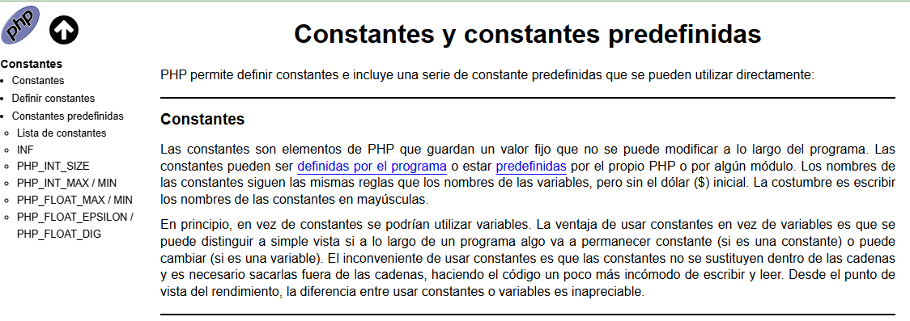
üíª Programa8: constantes
Programa7_constantes.php (Ruta:dwes/UD2/Entrega1/Programa7_constantes.php)
Copia el siguiente programa que contiene una tabla con constantes y variables, ejecútalo y analiza en tu readme los elementos más importantes. Personalizalo y amplía lo que consideres.
La sintaxis<?= ... ?> en PHP es un atajo para <?php echo ... ?> .
<?php
// --- Constantes propias ---
const DEPORTE = "Fútbol";
const EQUIPO = "Los Tigres";
const ESTADIO = "Gran Arena";
const AFORO = 50000;
// --- Constantes predefinidas de PHP ---
$constantes_php = [
"PHP_VERSION" => PHP_VERSION,
"PHP_OS" => PHP_OS,
"__FILE__" => __FILE__,
];
// --- Constantes propias en array para analizarlas ---
$constantes_propias = [
"DEPORTE" => DEPORTE,
"EQUIPO" => EQUIPO,
"ESTADIO" => ESTADIO,
"AFORO" => AFORO,
];
// --- Variables de ejemplo ---
$jugadores = ["Pedro", "Juan", "Luis"]; // array
$goles = 3; // entero
$capitan = "Carlos"; // string
$esLocal = true; // booleano
?>
<!DOCTYPE html>
<html lang="es">
<head>
<meta charset="UTF-8">
<title><?= EQUIPO ?> - <?= DEPORTE ?></title>
<style>
table { border-collapse: collapse; margin: 1em 0; }
th, td { border: 1px solid #999; padding: .4em .8em; }
th { background: #eee; }
</style>
</head>
<body>
<h1><?= EQUIPO ?> (<?= DEPORTE ?>)</h1>
<p>Estadio: <strong><?= ESTADIO ?></strong></p>
<p>Aforo máximo: <strong><?= AFORO ?></strong> espectadores</p>
<h2>Constantes de PHP</h2>
<table>
<tr>
<th>Nombre</th><th>Valor</th><th>gettype</th><th>is_string</th><th>is_int</th>
</tr>
<?php foreach ($constantes_php as $nombre => $valor): ?>
<tr>
<td><?= $nombre ?></td>
<td><?= $valor ?></td>
<td><?= gettype($valor) ?></td>
<td><?= is_string($valor) ? "sí" : "no" ?></td>
<td><?= is_int($valor) ? "sí" : "no" ?></td>
</tr>
<?php endforeach; ?>
</table>
<h2>Constantes propias</h2>
<table>
<tr>
<th>Nombre</th><th>Valor</th><th>gettype</th><th>is_string</th><th>is_int</th>
</tr>
<?php foreach ($constantes_propias as $nombre => $valor): ?>
<tr>
<td><?= $nombre ?></td>
<td><?= $valor ?></td>
<td><?= gettype($valor) ?></td>
<td><?= is_string($valor) ? "sí" : "no" ?></td>
<td><?= is_int($valor) ? "sí" : "no" ?></td>
</tr>
<?php endforeach; ?>
</table>
<h2>Variables de ejemplo</h2>
<table>
<tr>
<th>Nombre</th><th>Valor</th><th>gettype</th><th>is_array</th><th>is_integer</th><th>is_string</th><th>is_bool</th>
</tr>
<tr>
<td>$jugadores</td>
<td><?= implode(", ", $jugadores) ?></td>
<td><?= gettype($jugadores) ?></td>
<td><?= is_array($jugadores) ? "sí" : "no" ?></td>
<td><?= is_integer($jugadores) ? "sí" : "no" ?></td>
<td><?= is_string($jugadores) ? "sí" : "no" ?></td>
<td><?= is_bool($jugadores) ? "sí" : "no" ?></td>
</tr>
<tr>
<td>$goles</td>
<td><?= $goles ?></td>
<td><?= gettype($goles) ?></td>
<td><?= is_array($goles) ? "sí" : "no" ?></td>
<td><?= is_integer($goles) ? "sí" : "no" ?></td>
<td><?= is_string($goles) ? "sí" : "no" ?></td>
<td><?= is_bool($goles) ? "sí" : "no" ?></td>
</tr>
<tr>
<td>$capitan</td>
<td><?= $capitan ?></td>
<td><?= gettype($capitan) ?></td>
<td><?= is_array($capitan) ? "sí" : "no" ?></td>
<td><?= is_integer($capitan) ? "sí" : "no" ?></td>
<td><?= is_string($capitan) ? "sí" : "no" ?></td>
<td><?= is_bool($capitan) ? "sí" : "no" ?></td>
</tr>
<tr>
<td>$esLocal</td>
<td><?= $esLocal ? "true" : "false" ?></td>
<td><?= gettype($esLocal) ?></td>
<td><?= is_array($esLocal) ? "sí" : "no" ?></td>
<td><?= is_integer($esLocal) ? "sí" : "no" ?></td>
<td><?= is_string($esLocal) ? "sí" : "no" ?></td>
<td><?= is_bool($esLocal) ? "sí" : "no" ?></td>
</tr>
</table>
</body>
</html>
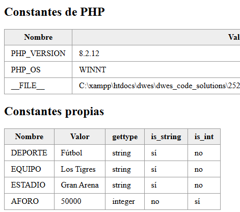
4 Fechas y horas
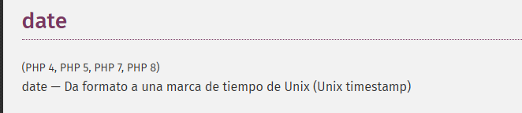
En PHP no existe un tipo de datos específico para trabajar con fechas y horas (enlace).
- La información de fecha y hora se almacena internamente como un número entero .
- Sin embargo, dentro de las funciones de PHP tienes a tu disposición unas cuantas para trabajar con ese tipo de datos.
- Devuelve una cadena formateada según el formato indicado usando el integer
timestamp(Unix timestamp) dado, o el momento actual si no se da una marca de tiempo. - En otras palabras,
timestampes opcional y por defecto es el valor de time().
Una de las más útiles es quizás la función date , que te permite obtener una cadena de texto a partir de una fecha y hora, con el formato que tú elijas.
- La función recibe dos parámetros, la descripción del formato y el número entero que identifica la fecha, y devuelve una cadena de texto formateada.
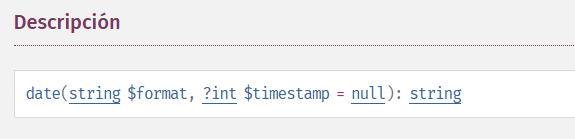
El formato lo debes componer utilizando como base una serie de caracteres de los que figuran en la siguiente tabla.
| Carácter | Resultado |
|---|---|
| d | día del mes con dos dígitos. |
| j | día del mes con uno o dos dígitos ( sin ceros iniciales ). |
| z | día del año, comenzando por el cero ( 0 = 1 de enero ). |
| N | día de la semana ( 1 = lunes, ..., 7 = domingo ) |
| w | día de la semana ( 0 = domingo, ..., 6 =sábado ). |
| l | texto del día de la semana, en inglés ( Monday, ..., Sunday ). |
| D | texto del día de la semana, solo tres letras, en inglés ( Mon, ..., Sun ). |
| W | número de la semana del año. |
| m | número del mes con dos dígitos. |
| n | número del mes con uno o dos dígitos ( sin ceros iniciales ). |
| t | número de días que tiene el mes. |
| F | texto del día del mes, en inglés ( January, ..., December ). |
| M | texto del día del mes, solo tres letras, en inglés ( Jan, ..., Dec ). |
| Y | número del año. |
| y | dos últimos dígitos del número del año. |
| L | 1 si el año es bisiesto, 0 si no lo es. |
| h | formato de 12 horas, siempre con dos dígitos |
|---|---|
| H | formato de 24 horas, siempre con dos dígitos |
| g | formato de 12 horas, con uno o dos dígitos (sin ceros iniciales ). |
| G | formato de 24 horas, con uno o dos dígitos (sin ceros iniciales ). |
| a | am o pm, en minúsculas. |
| A | AM o PM, en mayúsculas. |
| r | fecha entera con formato RFC 2822. |
Además, el segundo parámetro es opcional. Si no se indica, se utilizará la hora actual para crear la cadena de texto.
Para que el sistema pueda darte información sobre tu fecha y hora, debes indicarle tu zona horaria. Puedes hacerlo con la función date_default_timezone_set . Para establecer la zona horaria en España peninsular debes indicar:
Zona horaria
date_default_timezone_set('Europe/Madrid');
Si utilizas alguna función de fecha y hora sin haber establecido previamente tu zona horaria, lo más probable es que recibas un error o mensaje de advertencia de PHP indicándolo
Otras funciones como getdate devuelven un array con información sobre la fecha y hora actual.
- En la documentación de PHP puedes consultar todas las funciones para gestionar fechas y horas: https://www.php.net/manual/en/ref.datetime.php
üíª Programa9_date
Programa9_date.php (Ruta:dwes/UD2/Entrega1/Programa9_date.php)
Pídele a la IA un pequeño programa que muestre el uso más comun de la funcióndate, getdate y las funciones vistas en este punto, muestra con al menos 7-8 formatos diferentes.
Estúdialo y adáptalo para anotar lo más importante en tu README, con tus palabras y no Copy/Paste, please.
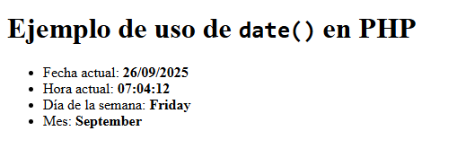
5. Variables Especiales de PHP (superglobals)
En la unidad anterior ya aprendiste qué eran y cómo se utilizaban las variables globales. PHP incluye unas cuantas variables internas predefinidas que pueden usarse desde cualquier ámbito, por lo que reciben el nombre de variables superglobales .
- Ni siquiera es necesario que uses global para acceder a ellas.
Cada una de estas variables es un array que contiene un conjunto de valores (en esta unidad veremos más adelante cómo se pueden utilizar los arrays). Las variables superglobales disponibles en PHP son las siguientes:
- $_SERVER . Contiene información sobre el entorno del servidor web y de ejecución. Entre la información que nos ofrece esta variable, tenemos:
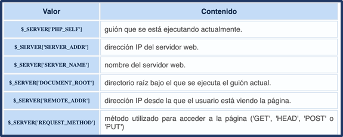
- En la documentación de PHP puedes consultar toda la información que ofrece $_SERVER : https://www.php.net/manual/es/reserved.variables.server.php
_GET, _POST y $_COOKIE contienen las variables que se han pasado al script actual utilizando respectivamente los métodos GET (parámetros en la URL), HTTP POST y Cookies HTTP.
$_REQUEST junta en uno solo el contenido de los tres arrays anteriores, $_GET , $_POST y $_COOKIE .
$_ENV contiene las variables que se puedan haber pasado a PHP desde el entorno en que se ejecuta.
$_FILES contiene los ficheros que se puedan haber subido al servidor utilizando el método POST.
$_SESSION contiene las variables de sesión disponibles para el guión actual.
En posteriores unidades iremos trabajando con estas variables.
Importante
Conviene tener a mano la información sobre estas variables superglobales disponible en el manual de PHP.
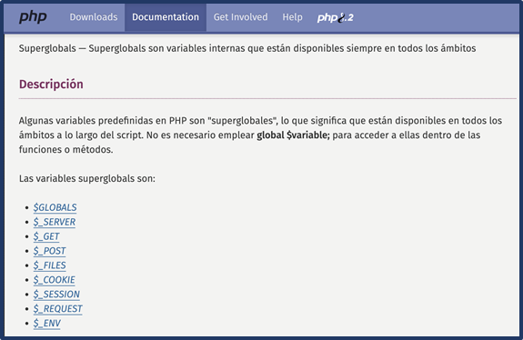
https://www.php.net/manual/es/language.variables.superglobals.php
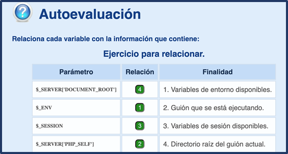
En el siguiente programa, vamos a trabajar con estas superglobales:
$_SERVER$_GET$_POST$_REQUEST$_FILES$_ENV$_GLOBALS$_COOKIE(se mostrará vacía si no hay cookies, pero no la definimos)$_SESSION(vacía si no se inicia, pero la listamos)$_FILES
üíª Programa10: superglobal
Programa10_superglobal.php (Ruta:dwes/UD2/Entrega1/Programa10_superglobal.php)
Vamos a completar los huecos para mostrar algunasvariables superglobales con la función print_r que pinta un array.
Programa10.php (para completar):
<!DOCTYPE html>
<html lang="es">
<head>
<meta charset="UTF-8">
<title>Ejemplo Superglobales PHP</title>
</head>
<body>
<h1>Ejemplo de Superglobales en PHP</h1>
<h2>1. $_SERVER</h2>
<pre><?php print_r( _______ ); ?></pre> <!-- HUECO 1 -->
<h2>2. $_GET</h2>
<form method="get">
<label>Nombre (GET): <input type="text" name="nombre"></label>
<input type="submit" value="Enviar GET">
</form>
<pre><?php print_r( _______ ); ?></pre> <!-- HUECO 2 -->
<h2>3. $_POST</h2>
<form method="post">
<label>Edad (POST): <input type="number" name="edad"></label>
<input type="submit" value="Enviar POST">
</form>
<pre><?php print_r( _______ ); ?></pre> <!-- HUECO 3 -->
<h2>4. $_REQUEST</h2>
<pre><?php print_r( _______ ); ?></pre> <!-- HUECO 4 -->
<h2>5. $_FILES</h2>
<form method="post" enctype="multipart/form-data">
<label>Subir archivo: <input type="file" name="archivo"></label>
<input type="submit" value="Enviar Archivo">
</form>
<pre><?php print_r( _______ ); ?></pre> <!-- HUECO 5 -->
<h2>6. $_ENV</h2>
<pre><?php print_r( _______ ); ?></pre> <!-- HUECO 6 -->
<h2>7. $_GLOBALS</h2>
<pre><?php print_r( _______ ); ?></pre> <!-- HUECO 7 -->
<h2>8. $_COOKIE</h2>
<pre><?php print_r( _______ ); ?></pre> <!-- HUECO 8 -->
<h2>9. $_SESSION</h2>
<pre><?php print_r( _______ ); ?></pre> <!-- HUECO 9 -->
</body>
</html>
- Ejecuta los códigos de formulario para comprobar resultados:

üìù Actividad Entregable
Entregable
Tienes la info en la sección "Actividad entregable"
üìòReferencias
[https://www.php.net/manual/es/]()
[https://www.php.net/manual/es/language.basic-syntax.php]()
[https://www.php.net/manual/es/function.echo.php]()
[https://www.php.net/manual/es/language.types.php]()